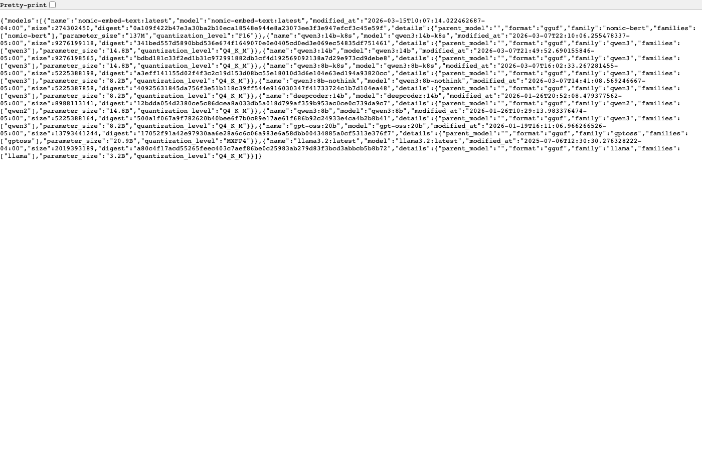
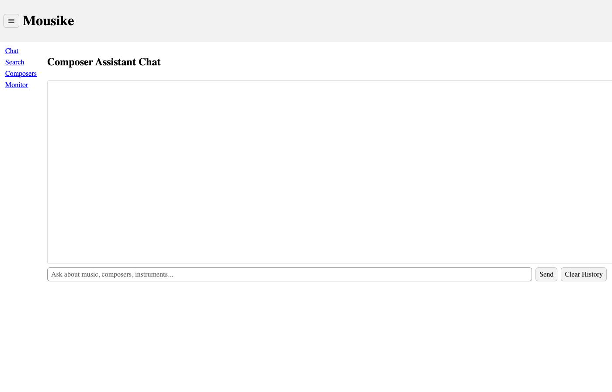
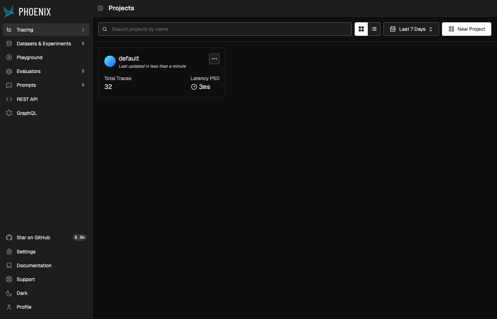
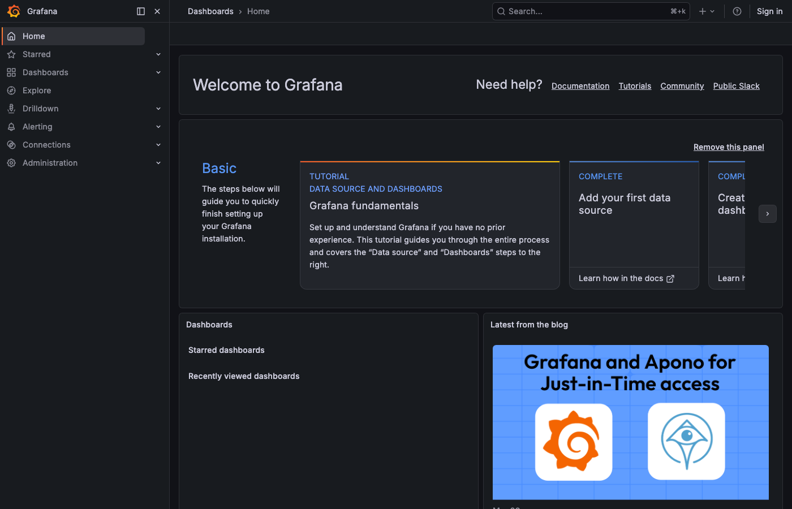
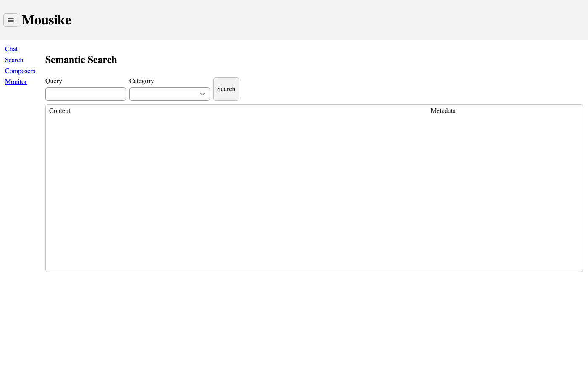
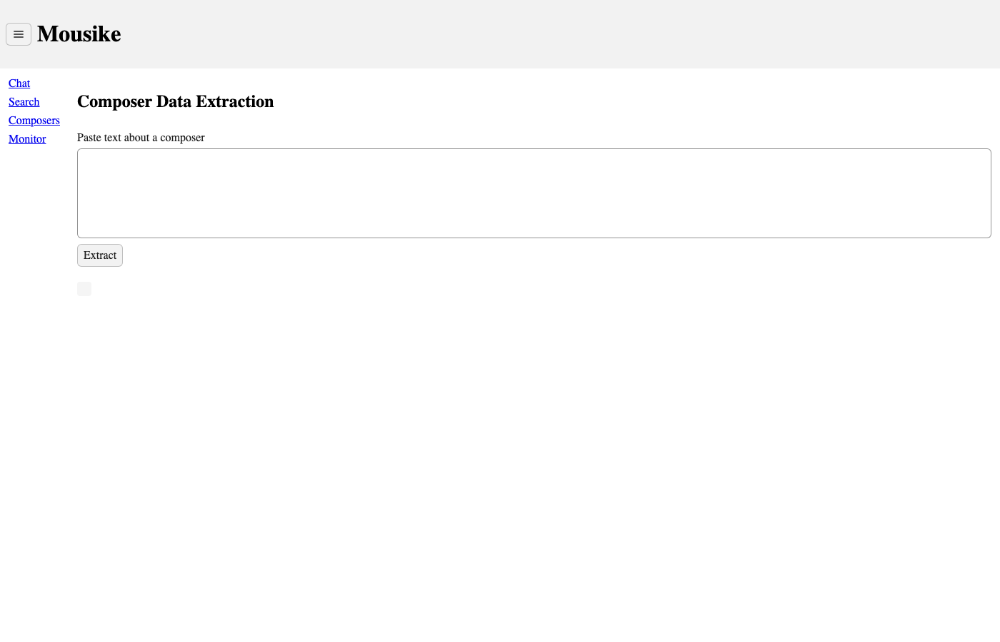
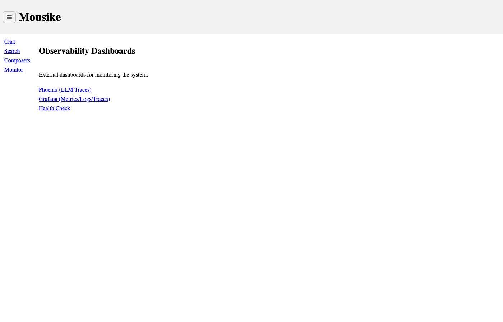
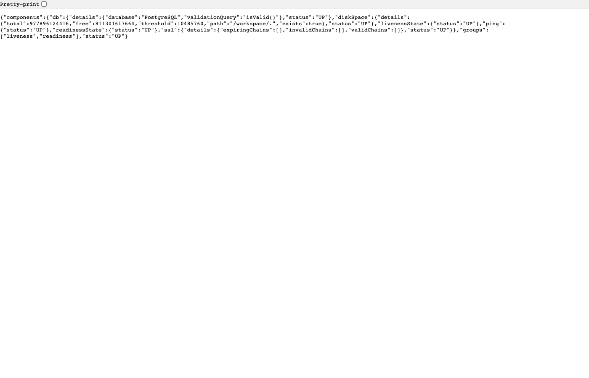

Mousike - Comprehensive Technical Guide
Mousike (Greek: mousike, meaning "music") is a composer assistant application that uses AI to answer questions about music, composers, instruments, and music theory. It combines a Large Language Model (LLM) with a knowledge base of music documents, so the AI can give accurate, source-backed answers instead of making things up.
The Problem Being Solved
The Hallucination Problem
Large Language Models (like ChatGPT, Claude, Llama) are powerful but have a fundamental flaw: they confidently make things up. This is called "hallucination." Ask an LLM "When was Beethoven born?" and it will likely answer correctly. But ask "What did the music theorist Johann Fux write about counterpoint in chapter 7 of Gradus ad Parnassum?" and the LLM might fabricate a plausible-sounding but completely wrong answer.
The Solution: RAG (Retrieval-Augmented Generation)
Instead of relying solely on the LLM's training data, we:
- Store trusted documents (PDFs about music theory, composer biographies, etc.) in a searchable database
- When a user asks a question, first search the database for relevant passages
- Give those passages to the LLM as context: "Here is what our documents say. Based on this, answer the user's question."
- Validate the output to ensure the LLM actually used the provided context
This way, the LLM acts as a summarizer of real documents rather than generating answers from its own (potentially wrong) memory.
What Mousike Adds Beyond Basic RAG
- Three RAG modes (Naive, Advanced, Agentic) so you can compare approaches
- 3-layer anti-hallucination guardrails that block the LLM if no relevant documents are found
- MCP (Model Context Protocol) for tool-calling architecture — the LLM decides which tools to use
- Full observability with traces for every LLM call (Phoenix + Grafana)
- Production-like deployment on Kubernetes (Kind cluster)
Big Picture Architecture
Core Concept: What is an LLM?
A neural network trained on massive amounts of text that can understand and generate human-like text. Think of it as a very sophisticated autocomplete that can write paragraphs, answer questions, and follow instructions.
How it works in Mousike:
- Mousike uses Ollama to run an LLM locally on your machine (no cloud API, no API keys)
- The specific model is
llama3.2— Meta's open-source 3B parameter model - The LLM runs on the host machine (not inside Kubernetes) at
localhost:11434 - Kubernetes pods reach it via
host.docker.internal:11434
Why Ollama Instead of OpenAI/Claude API?
| Aspect | Ollama (Local) | Cloud API (OpenAI/Claude) |
|---|---|---|
| Cost | Free (runs on your hardware) | Pay per token ($) |
| Privacy | Data never leaves your machine | Data sent to cloud |
| Latency | No network round-trip | Network latency + queue |
| Quality | Smaller models, less capable | Larger, more capable |
| Setup | Install Ollama + pull model | Get API key |
Core Concept: What is RAG?
A pattern where you retrieve relevant documents first, then generate an answer using those documents as context for the LLM. This grounds the LLM's response in actual data instead of its training memory.
The RAG pipeline in simple steps:
nomic-embed-text model)Core Concept: What is MCP?
An open protocol (created by Anthropic) that lets LLMs call external tools in a standardized way. Instead of hardcoding what the LLM can do, you register "tools" that the LLM can discover and invoke when it decides they're useful.
The Problem MCP Solves
Without MCP, connecting an LLM to external data requires tight coupling:
// Without MCP: You decide when to search
String context = vectorStore.search(question); // YOU control this
String answer = llm.generate(context + question);With MCP, the LLM decides when to use tools:
// With MCP: The LLM decides when to search
// LLM sees: "I have these tools: searchMusicKnowledge, searchByCategory"
// LLM thinks: "This question is about Bach. I should search for Bach."
// LLM calls: searchMusicKnowledge(query="Bach scales", topK=5)
// Tool returns results, LLM generates answer from themHow MCP Works in Mousike
MCP vs. Traditional Function Calling
Traditional Function Calling
- Tools defined inline with the LLM prompt
- Tied to specific LLM provider's format
- Tools live in the same application
- No standard protocol
MCP (Model Context Protocol)
- Tools registered on a separate server
- Provider-agnostic standard protocol
- Tools can be in different services/languages
- SSE-based real-time communication
Core Concept: What is a Vector Database?
Traditional databases search by exact keywords ("WHERE title = 'Bach'"). A vector database converts text into numbers (vectors) and finds texts with similar meaning, even if they use different words.
In Mousike: PostgreSQL with the pgvector extension serves as the vector database.
| Setting | Value | Why |
|---|---|---|
| Index Type | HNSW | Fast approximate nearest neighbor search |
| Distance | COSINE_DISTANCE | Measures angle between vectors (direction similarity) |
| Dimensions | 768 | Each text chunk becomes a 768-number vector |
| Table | vector_store | Where all document chunks are stored |
Core Concept: What are Embeddings?
An embedding model reads text and outputs a fixed-size list of numbers (vector) that captures the meaning of the text. Similar texts produce similar vectors.
"Bach wrote fugues" → [0.12, -0.45, 0.78, ..., 0.33] (768 numbers)
"Fugues by Bach" → [0.11, -0.44, 0.79, ..., 0.34] (very similar!)
"Pizza recipe" → [0.89, 0.23, -0.56, ..., -0.12] (very different)In Mousike: The nomic-embed-text model (running in Ollama) creates these embeddings. It produces 768-dimensional vectors. When you search, your query is also embedded, and PGVector finds the document chunks with the most similar vectors.
Ollama & The Models Used

Two Models, Two Purposes
| Model | Purpose | What It Does | Size |
|---|---|---|---|
llama3.2 |
Chat / Generation | Understands questions, follows instructions, generates human-like answers, decides when to call tools | ~2GB (3B params) |
nomic-embed-text |
Embeddings | Converts text into 768-dimensional vectors for semantic search. Does NOT generate text. | ~274MB |
llama3.2 is a generative model (it produces text). nomic-embed-text is an embedding model (it produces numbers). You cannot use one for the other's job. The chat model cannot create good embeddings, and the embedding model cannot write sentences.
How Ollama Works
Ollama is a local LLM runner. It downloads model weights and runs inference on your machine's CPU/GPU.
# Install Ollama (macOS)
brew install ollama
# Pull the models (one-time download)
ollama pull llama3.2 # ~2GB download
ollama pull nomic-embed-text # ~274MB download
# Ollama runs as a server at localhost:11434
# Spring AI connects to it via HTTP APIAlternative Models & Solutions
Alternative Chat Models (drop-in replacements for llama3.2)
| Model | Size | Pros | Cons |
|---|---|---|---|
mistral | 7B | Better reasoning, great for RAG | Needs more RAM (~4GB) |
phi3 | 3.8B | Microsoft model, good at instructions | Less creative |
gemma2 | 9B | Google model, strong coding | Needs GPU for speed |
qwen2.5 | 7B | Excellent multilingual support | Larger download |
| OpenAI GPT-4o | Cloud | Best quality, multimodal | Costs $, data leaves machine |
| Anthropic Claude | Cloud | Best at following instructions | Costs $, data leaves machine |
Alternative Embedding Models (replace nomic-embed-text)
| Model | Dimensions | Notes |
|---|---|---|
mxbai-embed-large | 1024 | Higher quality, larger vectors |
all-minilm | 384 | Smaller, faster, less accurate |
OpenAI text-embedding-3-small | 1536 | Cloud API, very high quality |
Alternative to Entire Stack
| Component | Mousike Uses | Alternatives |
|---|---|---|
| LLM Runtime | Ollama | vLLM, llama.cpp, LM Studio, HuggingFace TGI |
| Vector Store | PGVector | Pinecone, Weaviate, Qdrant, Milvus, Chroma |
| AI Framework | Spring AI | LangChain (Python), LlamaIndex, Haystack |
| Tool Protocol | MCP | LangChain Tools, OpenAI Functions, custom REST |
| Observability | Phoenix + Grafana | LangSmith, Weights & Biases, Helicone |
| Document Parser | Tika | Docling, Unstructured, PyMuPDF |
MCP Deep Dive
The Three MCP Tools in Mousike
Purpose: General semantic search across all music knowledge
Parameters: query (string), topK (int, default 5), minScore (double, default 0.65)
What it does: Embeds the query, searches PGVector with COSINE_DISTANCE, returns formatted text with source references
Example: LLM calls searchMusicKnowledge("Bach fugue techniques", 5, 0.65) and gets back relevant passages from music theory PDFs
Purpose: Search within a specific category (composers, instruments, theory, history, genres, techniques)
Parameters: query (string), category (string)
What it does: Same as searchMusicKnowledge but adds a metadata filter: WHERE category = ?
Example: LLM calls searchByCategory("violin construction", "instruments") to search only instrument-related documents
Purpose: Tell the LLM what knowledge sources exist
Parameters: none
What it does: Returns a static list of available document sources and their topics
Example: LLM calls this first to understand what topics it can search for
MCP Protocol Flow (JSON-RPC over HTTP+SSE)
// 1. Client discovers available tools
POST /mcp/sse → {"jsonrpc": "2.0", "method": "tools/list"}
Response: [{name: "searchMusicKnowledge", description: "...", inputSchema: {...}}, ...]
// 2. LLM decides to call a tool
POST /mcp/sse → {
"jsonrpc": "2.0",
"method": "tools/call",
"params": {
"name": "searchMusicKnowledge",
"arguments": {"query": "Bach fugue", "topK": 5, "minScore": 0.65}
}
}
// 3. Server executes and returns result via SSE stream
Response: {
"result": {
"content": [{
"type": "text",
"text": "[Source: music-theory.pdf, Score: 0.89]\nBach's fugues..."
}]
}
}The Two Applications
Mousike App — Component Breakdown

Package Structure
com.example.mousike/
MouseikeApplication.java ← Spring Boot entry point
config/
AiConfig.java ← ChatClient beans, JDBC memory, RAG client
McpClientConfig.java ← Agentic ChatClient with MCP tools
ObservabilityConfig.java ← Dual OTLP exporters (Phoenix + Grafana)
RedisConfig.java ← Placeholder (Redis not used for memory)
guardrails/
RetrievalResult.java ← Record: hasData, lowConfidence, documents
RagRetrievalGate.java ← Layer 1: Score threshold (0.65) + min chunks (2)
OutputValidator.java ← Layer 3: Grounding ratio check (30%)
rag/
NaiveRagService.java ← Simple: embed → search → generate
AdvancedRagService.java ← Better: higher topK, stricter thresholds
AgenticRagService.java ← LLM-driven: MCP tool calling
RagController.java ← POST /api/rag/query?mode=naive|advanced|agentic
chat/
ChatService.java ← Streaming + sync chat with JDBC memory
ChatController.java ← POST /api/chat, /api/chat/stream, DELETE
classification/
InstrumentClassifier.java ← LLM classifies instruments into categories
ClassificationController.java ← POST /api/classify
extraction/
ComposerExtractor.java ← LLM extracts structured JSON from text
ExtractionController.java ← POST /api/extract
semantic/
SemanticSearchService.java ← Vector similarity search with filters
SemanticSearchController.java ← GET /api/search?q=...&category=...
ui/
MainLayout.java ← Vaadin navigation shell (sidebar + header)
ChatView.java ← /chat - streaming chat interface
SearchView.java ← /search - semantic search + results grid
ComposerView.java ← /composer - text extraction demo
MonitorView.java ← /monitor - links to Phoenix/Grafana
domain/
Composer.java ← JPA entity (name, era, biography)
Instrument.java ← JPA entity (name, category, description)
Recital.java ← JPA entity (title, venue, date, composer FK)
repository/
ComposerRepository.java ← findByNameContaining, findByEra
InstrumentRepository.java ← findByCategory, findByNameContaining
RecitalRepository.java ← JpaRepository (basic CRUD)Key Configuration Beans
AiConfig.java — The Heart of the AI Setup
// 1. JDBC-based chat memory (stores conversation history in PostgreSQL)
@Bean
JdbcChatMemoryRepository chatMemoryRepository(DataSource ds) {
return JdbcChatMemoryRepository.builder().dataSource(ds).build();
}
// 2. Windowed memory (keeps last 20 messages per conversation)
@Bean
ChatMemory chatMemory(JdbcChatMemoryRepository repo) {
return MessageWindowChatMemory.builder()
.chatMemoryRepository(repo)
.maxMessages(20)
.build();
}
// 3. Default chat client (for general conversation)
@Bean
ChatClient chatClient(ChatModel model, ChatMemory memory) {
return ChatClient.builder(model)
.defaultSystem("You are Mousike, a music knowledge assistant...")
.defaultAdvisors(MessageChatMemoryAdvisor.builder(memory).build())
.build();
}
// 4. RAG-specific chat client (stricter system prompt + vector search advisor)
@Bean("ragChatClient")
ChatClient ragChatClient(ChatModel model, VectorStore vs, ChatMemory memory) {
return ChatClient.builder(model)
.defaultSystem("Answer ONLY from provided context. If unsure, say so.")
.defaultAdvisors(
MessageChatMemoryAdvisor.builder(memory).build(),
new QuestionAnswerAdvisor(vs, SearchRequest.builder()
.similarityThreshold(0.50).topK(5).build()))
.build();
}Document Service — MCP Server
Package Structure
com.example.mousike/
DocumentServiceApplication.java ← @SpringBootApplication + @EnableAsync
config/
McpServerConfig.java ← Registers MusicKnowledgeTools as MCP tools
ObservabilityConfig.java ← OTLP gRPC exporter for Phoenix
tools/
MusicKnowledgeTools.java ← 3 @Tool methods (the MCP tools)
ingestion/
DocumentIngestionService.java ← ETL: Tika → TokenTextSplitter → PGVector
IngestionStartupRunner.java ← @Profile("ingestion") auto-loads docs at boot
IngestionController.java ← REST: POST /api/ingest, GET /api/documents
domain/
DocumentMetadata.java ← JPA entity tracking ingested filesDocument Ingestion Pipeline (ETL)
Kubernetes Infrastructure
All Services in the Kind Cluster (namespace: rag)
| Service | Image | Internal Port | External Port | Purpose |
|---|---|---|---|---|
| mousike | mousike-app:latest | 8080 | localhost:8080 | Main app (UI + API + RAG) |
| document-service | document-service:latest | 8090 | localhost:8091 | MCP Server (tools + ingestion) |
| postgres | ankane/pgvector:latest | 5432 | (internal only) | PostgreSQL + pgvector extension |
| redis | redis:7-alpine | 6379 | (internal only) | Cache (currently placeholder) |
| docling | docling-serve:latest | 5001 | (internal only) | Document parsing (PDF→text) |
| phoenix | arizephoenix/phoenix | 6006 | localhost:6006 | LLM trace viewer |
| grafana-lgtm | grafana/otel-lgtm | 3000 | localhost:3000 | Metrics/Logs/Traces dashboard |
Kind creates a full Kubernetes cluster inside Docker containers on your local machine. This gives you a production-like environment (pods, services, deployments, config maps, secrets) without needing a cloud cluster. The extraPortMappings in kind-config.yaml expose services to localhost.
Startup Dependency Order
Data Flows
Flow 1: User Sends a Chat Message
Flow 2: Naive RAG Query
Flow 3: Agentic RAG (MCP Tool Calling)
The Three RAG Modes Compared
| Aspect | Naive | Advanced | Agentic |
|---|---|---|---|
| How search works | Direct vector search, topK=5 | Advisor-based, topK=10 | LLM decides when/what to search via MCP |
| Who controls search | Application code | Application code | The LLM itself |
| Guardrails | Full 3-layer | Full 3-layer | LLM-managed (no explicit gates) |
| Search threshold | 0.65 | 0.65 | 0.65 (configured in MCP tool) |
| Multi-step search | No (single search) | No (single search) | Yes (LLM can call tools multiple times) |
| Best for | Simple, direct questions | Complex questions needing more context | Multi-faceted questions, comparisons |
| Speed | Fastest | Medium | Slowest (multiple LLM calls) |
| Java class | NaiveRagService | AdvancedRagService | AgenticRagService |
Anti-Hallucination Guardrails
This is the most important architectural rule in Mousike. If the vector search finds no relevant documents, the system returns a safe "I don't have enough information" message without ever calling the LLM.
Layer 1: Retrieval Gate (RagRetrievalGate.java)
MINIMUM_SCORE_THRESHOLD = 0.65 // At least 65% similarity
MINIMUM_CHUNK_COUNT = 2 // At least 2 relevant chunks
if (results.isEmpty()) → RetrievalResult.noData("No results found")
if (results.size() < 2) → RetrievalResult.lowConfidence("Too few results")
if (all scores < 0.65) → RetrievalResult.noData("Scores too low")
else → RetrievalResult.withData(documents)Layer 2: System Prompt (configured in AiConfig.java)
System prompt for RAG client:
"You are a music knowledge assistant. Answer ONLY based on the
provided context. If the context doesn't contain enough information
to answer the question, say 'I don't have enough information to
answer that question.'"Layer 3: Output Validator (OutputValidator.java)
GROUNDING_THRESHOLD = 0.30 // 30% of response words must appear in source docs
1. Check: Is response empty or null? → INVALID
2. Check: Is response a valid refusal? ("I don't have enough information") → VALID
3. Calculate: groundingRatio = (words in response found in source docs) / (total response words)
4. Check: groundingRatio >= 0.30? → VALID, else → INVALID (response discarded)Chat Memory System
Mousike maintains conversation history so the LLM can reference earlier messages. For example, if you say "Tell me about Bach" then ask "What are his most famous works?", the LLM knows "his" refers to Bach.
How It Works
// Storage: JDBC (PostgreSQL table: chat_memory)
JdbcChatMemoryRepository → stores messages in PostgreSQL
// Window: Last 20 messages per conversation
MessageWindowChatMemory → keeps only the 20 most recent messages
// Integration: MessageChatMemoryAdvisor
// Before each LLM call:
// 1. Load last 20 messages for this conversationId
// 2. Prepend them to the prompt
// 3. After response, save user + assistant messages| Feature | Implementation |
|---|---|
| Storage backend | PostgreSQL via JdbcChatMemoryRepository |
| Window size | 20 messages (configurable) |
| Isolation | Per conversationId (UUID) |
| Clear history | DELETE /api/chat/{conversationId} |
| Advisor key | "chat_memory_conversation_id" (string literal) |
Document Ingestion Pipeline
Before RAG can work, documents must be loaded into the vector database. This is done by the ingestion pipeline.
Two Ways to Ingest Documents
1. Kubernetes Job (Bulk Loading)
# Apply the ingestion job manifest
kubectl apply -f k8s/ingester/job.yaml
# This runs document-service with --spring.profiles.active=ingestion,k8s
# IngestionStartupRunner loads all docs from classpath:docs/2. REST API (Manual Upload)
# Upload a single PDF
curl -X POST http://localhost:8091/api/ingest \
-F "file=@my-document.pdf" \
-F "category=theory"
# Response: {"filename": "my-document.pdf", "chunksIngested": 42, "success": true}Observability Stack


Two Observability Systems
Phoenix (LLM-specific)
- URL:
http://localhost:6006 - Shows: Every LLM call (prompt, completion, tokens, latency)
- Shows: Embedding calls
- Shows: Tool/MCP calls
- Protocol: OTLP (HTTP from mousike, gRPC from document-service)
Grafana LGTM (Infrastructure)
- URL:
http://localhost:3000 - Shows: JVM metrics (memory, GC, threads)
- Shows: HTTP request metrics
- Shows: Application logs (Loki)
- Shows: Distributed traces (Tempo)
- Protocol: OTLP HTTP + Prometheus scraping
What Gets Traced
Spring AI auto-instruments all AI operations when spring.ai.*.observations.enabled=true:
- Every
ChatClient.call()→ traced with prompt text, model name, token counts - Every embedding call → traced with input text, vector dimensions
- Every vector search → traced with query, results count, latency
- Every MCP tool call → traced with tool name, arguments, result
Vaadin UI Views



| View | URL | Purpose | Key IDs (for testing) |
|---|---|---|---|
| Chat | /chat | Conversational AI chat with streaming | #chat-input, #send-button, #clear-button |
| Search | /search | Semantic vector search + category filter | #search-input, #category-select, #search-button |
| Composer | /composer | Extract structured JSON from composer text | #composer-input, #extract-button, #extraction-result |
| Monitor | /monitor | Links to Phoenix, Grafana, actuator health | #phoenix-link, #grafana-link, #health-link |
REST API Reference

Mousike App (localhost:8080)
| Method | Endpoint | Body | Response |
|---|---|---|---|
| POST | /api/chat | {"message": "...", "conversationId?": "..."} | {"response": "...", "conversationId": "..."} |
| POST | /api/chat/stream | {"message": "...", "conversationId?": "..."} | SSE stream of tokens |
| DELETE | /api/chat/{id} | - | 204 No Content |
| POST | /api/rag/query?mode= | {"question": "..."} | {"question": "...", "answer": "...", "mode": "..."} |
| GET | /api/search?q=&category=&topK= | - | [{"content": "...", "metadata": {...}}] |
| POST | /api/classify | {"description": "..."} | {"classification": "{category, confidence, reasoning}"} |
| POST | /api/extract | {"text": "..."} | {"extraction": "{name, birthYear, ...}"} |
| GET | /actuator/health | - | Health status with components |
| GET | /actuator/prometheus | - | Prometheus metrics (text format) |
Document Service (localhost:8091)
| Method | Endpoint | Body | Response |
|---|---|---|---|
| POST | /api/ingest | Multipart: file + category | {"filename", "chunksIngested", "success"} |
| GET | /api/documents | - | Document metadata |
| - | /mcp/sse | JSON-RPC (MCP protocol) | SSE stream (MCP responses) |
| GET | /actuator/health | - | Health status |
Manual Testing Guide
All tests assume the full stack is running. Start it with: ./scripts/start-stack.sh --yes
For automated E2E tests: cd e2e && npx playwright test
Test Group 1: Infrastructure Health
kubectl get pods -n rag
Expected: All 7 pods show STATUS=Running, READY=1/1
curl http://localhost:8080/actuator/health
Expected: {"status":"UP"} with components.db.status = "UP"
curl http://localhost:8091/actuator/health
Expected: {"status":"UP"}
curl http://localhost:8080/actuator/health | jq '.components.db'
Expected: status="UP", database="PostgreSQL"
curl http://localhost:11434/api/tags
Expected: JSON listing "llama3.2" and "nomic-embed-text" models
curl -s http://localhost:6006/healthz
Expected: HTTP 200, or open http://localhost:6006 in browser
curl http://localhost:3000/api/health
Expected: {"database":"ok"}
curl http://localhost:8080/actuator/prometheus | head -20
Expected: Prometheus text format with jvm_memory_*, http_server_* metrics
curl http://localhost:8080/actuator/info
Expected: HTTP 200 (may be empty JSON {})
Test Group 2: API Endpoints
curl -X POST http://localhost:8080/api/chat \ -H "Content-Type: application/json" \ -d '{"message": "Hello, what is music?"}'
Expected: {"response": "...(non-empty text)...", "conversationId": "...(UUID)..."}
# First message curl -X POST http://localhost:8080/api/chat \ -H "Content-Type: application/json" \ -d '{"message": "My favorite instrument is the cello", "conversationId": "test-ctx"}' # Second message curl -X POST http://localhost:8080/api/chat \ -H "Content-Type: application/json" \ -d '{"message": "What is my favorite instrument?", "conversationId": "test-ctx"}'
Expected: Second response mentions "cello" (proves context is maintained)
curl -X DELETE http://localhost:8080/api/chat/test-ctx
Expected: HTTP 204 No Content
curl "http://localhost:8080/api/search?q=music+theory&topK=3"
Expected: JSON array of objects with "content" and "metadata" fields
curl "http://localhost:8080/api/search?q=piano&topK=2"
Expected: Array with at most 2 results
curl "http://localhost:8080/api/search?q=violin&category=instruments&topK=5"
Expected: Results where metadata.category = "instruments"
curl -X POST http://localhost:8080/api/classify \ -H "Content-Type: application/json" \ -d '{"description": "A large brass instrument with valves played in orchestras"}'
Expected: JSON with category (e.g., "BRASS"), confidence (0-1), reasoning
curl -X POST http://localhost:8080/api/extract \ -H "Content-Type: application/json" \ -d '{"text": "Ludwig van Beethoven was born in 1770 in Bonn, Germany. He composed 9 symphonies."}'
Expected: JSON with name, birthYear, nationality, notableWorks
Test Group 3: RAG Pipeline
curl -X POST "http://localhost:8080/api/rag/query?mode=naive" \ -H "Content-Type: application/json" \ -d '{"question": "What is a musical scale?"}'
Expected: {"question": "...", "answer": "...(substantive answer)...", "mode": "naive"}
curl -X POST "http://localhost:8080/api/rag/query?mode=advanced" \ -H "Content-Type: application/json" \ -d '{"question": "Explain the difference between major and minor scales"}'
Expected: Detailed answer with more context (topK=10 retrieves more docs)
curl -X POST "http://localhost:8080/api/rag/query?mode=agentic" \ -H "Content-Type: application/json" \ -d '{"question": "Tell me about famous violin compositions"}'
Expected: Answer (may be slower due to tool calls). Check Phoenix traces to see tool invocations.
curl -X POST "http://localhost:8080/api/rag/query?mode=naive" \ -H "Content-Type: application/json" \ -d '{"question": "What is the capital of France?"}'
Expected: Answer contains "I don't have enough information" (guardrails block non-music queries)
curl -X POST "http://localhost:8080/api/rag/query?mode=naive" \ -H "Content-Type: application/json" \ -d '{"question": "asdfghjkl zxcvbnm"}'
Expected: "I don't have enough information" (no relevant vectors found)
curl -X POST "http://localhost:8080/api/rag/query" \ -H "Content-Type: application/json" \ -d '{"question": "What is harmony?"}'
Expected: mode="advanced" in response (default when no mode parameter)
Test Group 4: UI Tests
Open http://localhost:8080/chat in browser
Expected: Page with "Composer Assistant Chat" heading, text input, and Send button
Type "Hello" in the input field and click Send
Expected: Your message appears as a user bubble. After a few seconds, an assistant response appears below.
Click the "Clear" button
Expected: Chat history is cleared, starting a fresh conversation
Navigate to http://localhost:8080/search, type "Bach" and click Search
Expected: Grid shows search results with content and metadata columns
Navigate to /composer, paste "Mozart was born in 1756 in Salzburg" and click Extract
Expected: JSON output with extracted fields (name, birthYear, nationality)
Navigate to http://localhost:8080/monitor
Expected: Links to Phoenix (localhost:6006), Grafana (localhost:3000), and actuator/health
Click each link in the sidebar: Chat, Search, Composer, Monitor
Expected: Each view loads correctly without errors
Test Group 5: Observability
1. Send a chat message via API or UI
2. Open http://localhost:6006
Expected: Phoenix shows recent traces with model=llama3.2, showing prompt/completion text
1. Send a search query
2. Check Phoenix for embedding spans
Expected: Traces show nomic-embed-text embedding calls with vector dimensions
Open http://localhost:3000, explore Prometheus datasource, query: jvm_memory_used_bytes
Expected: Graph showing memory usage for mousike and document-service
curl http://localhost:8080/actuator/prometheus | grep gen_ai
Expected: gen_ai_client_operation_seconds_count metrics (increases after LLM calls)
curl http://localhost:8080/actuator/prometheus | grep db_vector
Expected: db_vector_client_operation_seconds metrics after search operations
Test Group 6: Edge Cases & Error Handling
curl -X POST http://localhost:8080/api/chat \ -H "Content-Type: application/json" \ -d '{"message": ""}'
Expected: Error response or empty handling (should not crash)
Send a message with 1000+ characters
Expected: LLM processes it (may be truncated by context window of 4096 tokens)
curl "http://localhost:8080/api/search?q=xyznonexistent123&topK=5"
Expected: Empty array [] (no crash, no error)
curl -X DELETE http://localhost:8080/api/chat/nonexistent-id
Expected: HTTP 204 (idempotent, no error)
Send messages with conversationId="session-A" and conversationId="session-B"
Expected: Each session has independent memory (context doesn't leak)
curl -X POST "http://localhost:8080/api/rag/query?mode=invalid" \ -H "Content-Type: application/json" \ -d '{"question": "test"}'
Expected: Falls through to "advanced" mode (default case in switch)
curl -v http://localhost:8091/mcp/sse
Expected: SSE connection opened (Content-Type: text/event-stream)
Quick Reference: Run All Tests
# Automated E2E tests (API + UI + Full-Stack)
cd e2e && npx playwright test
# API tests only
npx playwright test --project=api
# UI tests only
npx playwright test --project=ui
# Full-stack tests (infrastructure through tracing)
npx playwright test --project=full-stack
# Manual sanity check (from start-stack.sh)
./scripts/start-stack.sh --yes # Includes 15 automated sanity checks
# View test report
npx playwright show-report